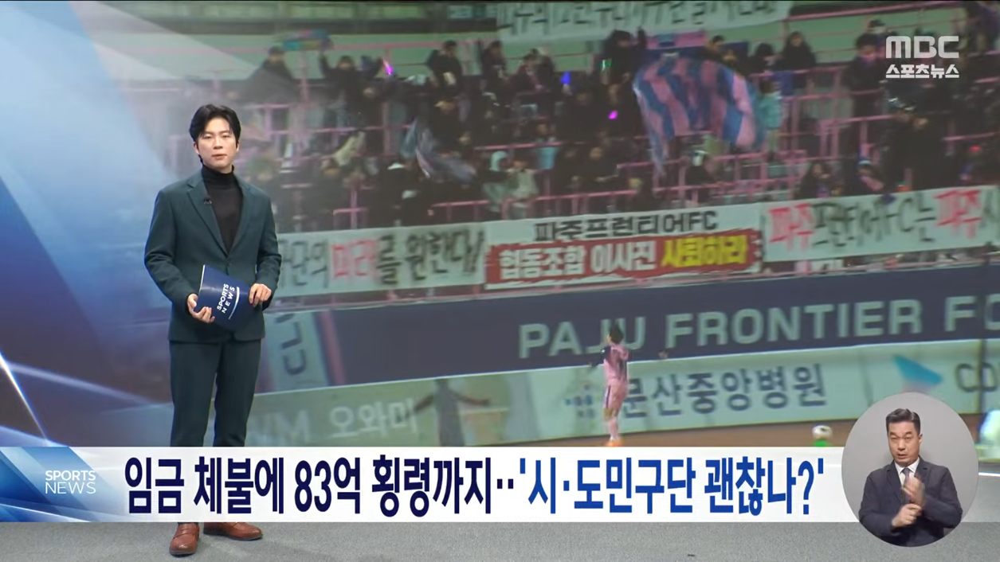
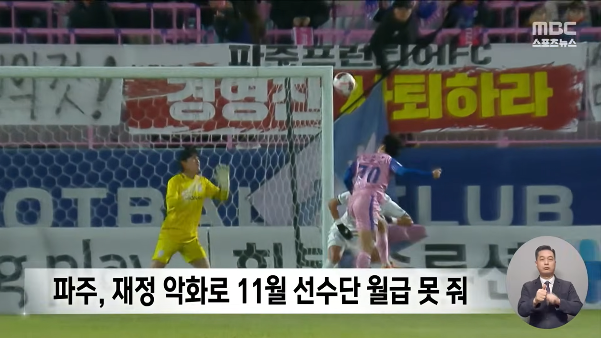
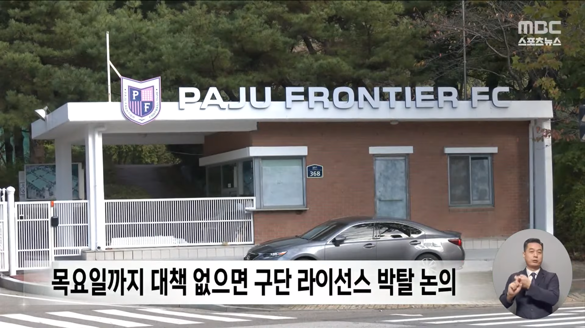
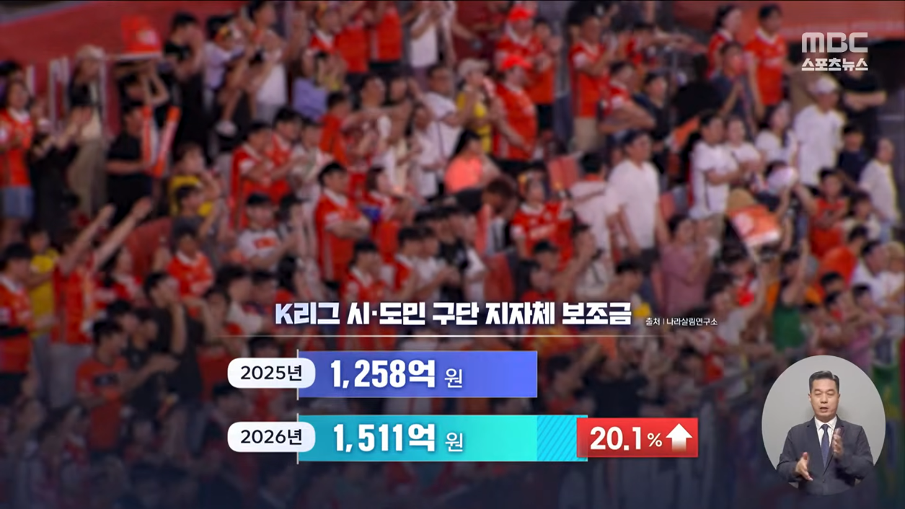
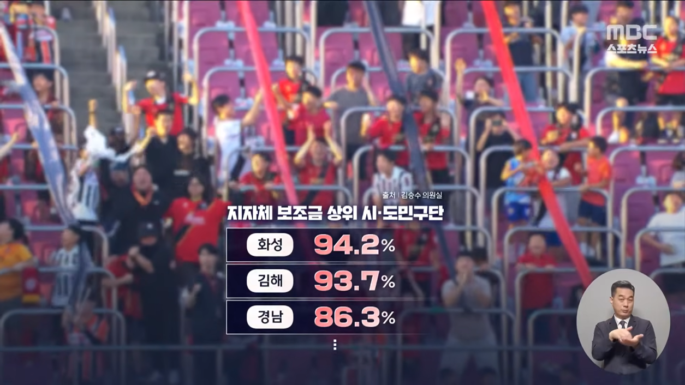
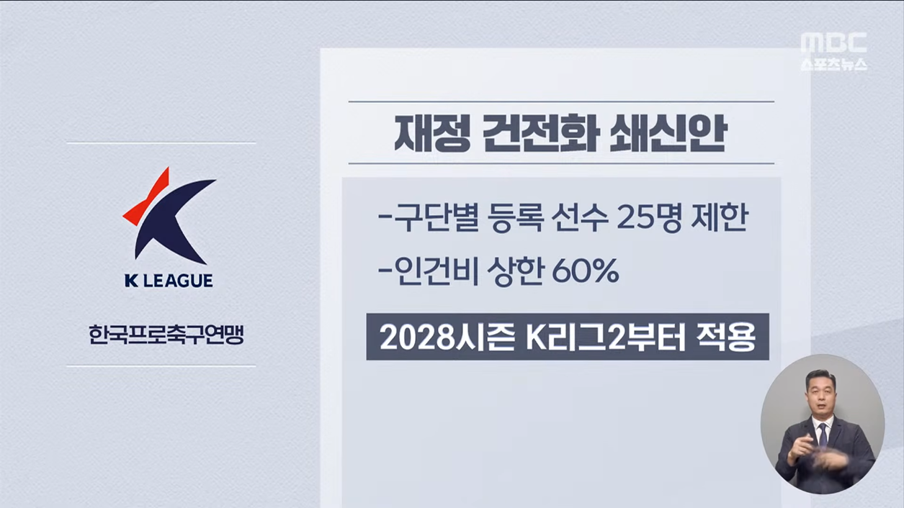

축구도 못하는 새끼들이
지들끼리 시민구단 만들어놓고
세금으로 지들 일자리 해쳐먹고
늙은새끼는 고문 역할 한답시고 명함파놓고 세금을 지 연금마냥 타먹고
외국인한테 왜 연봉준답시고 우리 세금을 받침?
조져야돼
근데 2부리그만 적용?






축구도 못하는 새끼들이
지들끼리 시민구단 만들어놓고
세금으로 지들 일자리 해쳐먹고
늙은새끼는 고문 역할 한답시고 명함파놓고 세금을 지 연금마냥 타먹고
외국인한테 왜 연봉준답시고 우리 세금을 받침?
조져야돼
근데 2부리그만 적용?
아무리 생각해도 세금 기생충 같음....
??? "죄송하지만 예산 더 주십쇼."
죄송하다는 말도 안하던데
어이 돈줘 ...
이영표가 행정사무감사가서 직접했던 얘기임
https://www.youtube.com/watch?v=acoH0jCNhnM
아이 싯팔 돈이 모자르잖아 안채워놔?
아무리 봐도 윗분들 세금 쌀먹 서커스로밖에 안보임
경기도 재정 위기라면서 공놀이 하는 애들한테 돈을 얼마를 주고 있는거여 ㅋㅋㅋㅋ 보조금 다 끊어라 공놀이 하고 싶으면 알아서 돈 벌이다 하라고 해
지밥값은 씨유알바를 하던 해서 알아서 벌고 공놀이는하던가 말던가 해야지
공놀이 하라고 국민들 호주머니탈어서 세금 퍼주는게 맞냐.진짜

시팔 온 나라에 도둑놈 새끼들 밖에 없구만
온갖 위원이라고 명함 달고 들러리 선 새기들도 극혐임
축구생활수급자 새끼들이지
엘리트체육에서 생활체육으로 전환해야 하지 않을까
크보도 암흑기가 있었는데 지금 잘되는거 보면 축구는 뭔가 문제가 많은거 같다
축구 자체가 야구처럼 일주일에 6번 할 수도 없는데다가 인구가 너무 적음.
그래두 분명 기회는 있었지 않나
2002때 붐이었는데.. 해축에 밀려서 그런가
그때 한번 잘된걸로 아직까지 우려먹는거임 월드컵이 너무 잘됐음
이거 지역 스포츠 구단이 경제 활성화에 상당히 기여한다는 연구결과(야구경기 있는 날이면 치킨 판매가 유의미하게 많다는 식의)가 있어서 존나 퍼부어줬을거임.
근데 그게 10년전 연구라 아마 지금 다시 연구하면 좀 다르게 나올지도
여기는 좀 다른 문제임 시민들이랑 지자체 의원들 다 반대하는데 억지로 만든거라...
저기 단장이 비리로 유명한 황보관
파주 구단이 K3에서 억지로 K2 끌고간거 쓰면 승희가 잡아감
솔직히 진짜 K1리그 팀 절반은 날려야
걍 이런거 없애는 게 맞음.
걍 세금 하마임.
그리고 지역 스포츠 구단이 왜 있어야하는 거냐.
할꺼면 민영으로 하던가.
수원도 이미 수원삼성이 있는데 수원시민구단 하나 더 만들어서 해쳐먹는것만해도 얼마나 족쟁이 새끼들이 세금 슈킹할라 안달나있는지 보임
기생충들
그냥 시발 절반 해체해 ㅋㅋㅋㅋ
프로스포츠가 세금없으면 안돌아간다는거 자체가 ㅋㅋㅋㅋ존나 기괴한거지
진정한 "공"무원임
월급도 많이 받는 공위직 축구직렬 공무원...
근데 공익에는 도움안되고 "공"익만 챙김
방법은 간단 여자축구랑 통합하면 조단위로 절약
인건비 제한 더 줄여라..
이윤을 창출하지 못하는게 무슨 프로? 그냥 아마축구리그라고 해라 아니면 세금기생리그
튀르키에처럼 가야지.
거긴 경제 박살나니깐 몇년전에 좆민구단에 지자체나 공공기관의 자금지원 금지시키고
매각, 파산, 아마추어 전환 같은 방식으로 많이 쳐냈다던데
혈세로 굴러가는 생산성 1도 없는 공놀이는 죽여야함
이 개새끼들 다 해체시켜야한다. 멀쩡한 구단도 도매금으로 같이 욕먹이는 축협 카르텔 노인 일자리 낙하산 구단 씹새들
쇄?신
지자체에서 앞장서서 축구계 틀딱들이랑 손잡고 마구잡이로 구단 찍어내니까 한국 축구계가 발전 못한거임
k리그1 평균 관중수나 팬 규모 봤을때 2002열풍타고 축구 관심이 늘었을때 야구처럼 소수 리그로 운영했으면 충분히 세계적 경쟁력이 있었음
2부까지 구단 29개중 세금구단이 19개인데다 승강제 압박이 커서 노잼텐백축구만 반복한 세월이 길어지니 팬들은 줄어들고 몸으로 떼우는 늪축구만 반복하면서 기술적 경쟁력을 잃어버림
근데 정치권에 해줘 시전해봤자 지자체장들이 앞장서서 자기동네에 구단유치하고 구단에 지 관계자 꽂아서 억대연봉 타먹고 자기 표밭 만들어서 상부상조하는게 관습화 되어있고 이제와서 없애고 싶어도 선수단, 코치진, 구단직원, 경기장직원, 유소년, 학부모, 주변상인 등까지 워낙 이해관계자가 많아서 없애지도 못함
축구생활수급자네ㅋㅋ
진짜 세금 헤쳐 먹는건 창의력 대장들이야
내가 돈이 없는건 저렇게 나랏돈 빨아먹질 않아서 인거 같아
자립못하면 걍 없애야됨
저런거 쓸 세금 날리고 야구장이든 축구장이든 만들고 체육시설 늘려서 사람들이 쓰게 해줘야함 막말로 k3이하는 누가 본다고 세금을 씀
프로야구도 프로?? 라고? 하면서 조리돌림 당하는데
k리그? 에라이
세금구단 해체하고 기업구단으로만 프로리그 굴려야지
지랄말고 기업구단으로 굴려 병신들아
kbo도 10개 구단 많다고 말 나오는데
케이리그는 구단이 30개 가까이 됨
근데 기업구단은 딱 10개임ㅋㅋ
뭔 즈그가 스폰받고 알아서 해야지 세금을 씀ㅋㅋ
받침에 ㄷ받침 빼주라
화성fc는 ㅅㅂㅋㅋㅋㅋㅋ
프로야구보고는 레저라고 ㅈㄹ 하던 세금기생충새끼들
적어도 '프로'라는 단어 달고 싶면 세금 기생은 그만 하고 자생해라
거렁뱅이 새끼들이 개척, 도전, 미래란다. ㅅㅂ 하도 같잖아서 웃음이 다 나오네.
그 따위로 구단을 살려야 되는 지경까지 왔으면 그냥 자살을 해. 진짜 창피하지도 않나.
해쳐먹는 틀딱들이 자리차지하고 쳐빨고있으니
시민구단이 기업구단보다 돈 더 쓰는게 이해가 안감